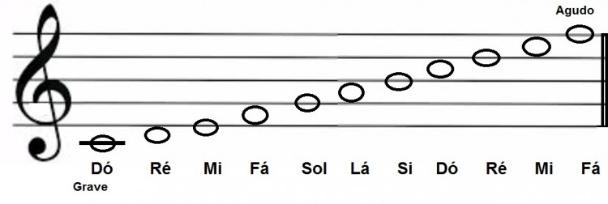
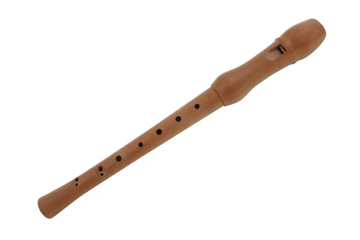
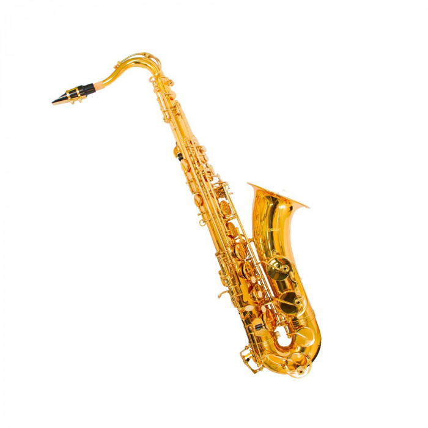
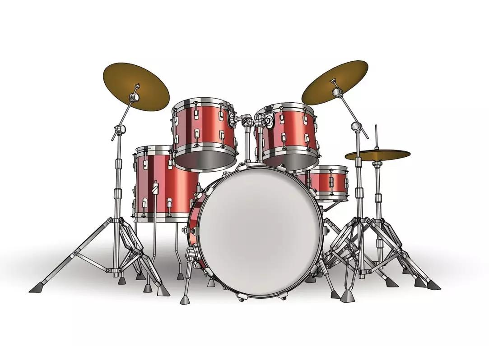
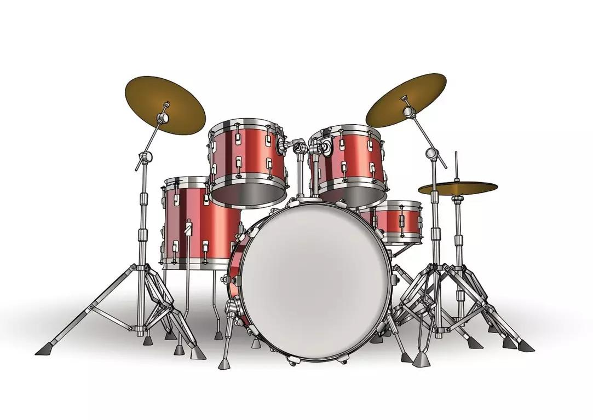
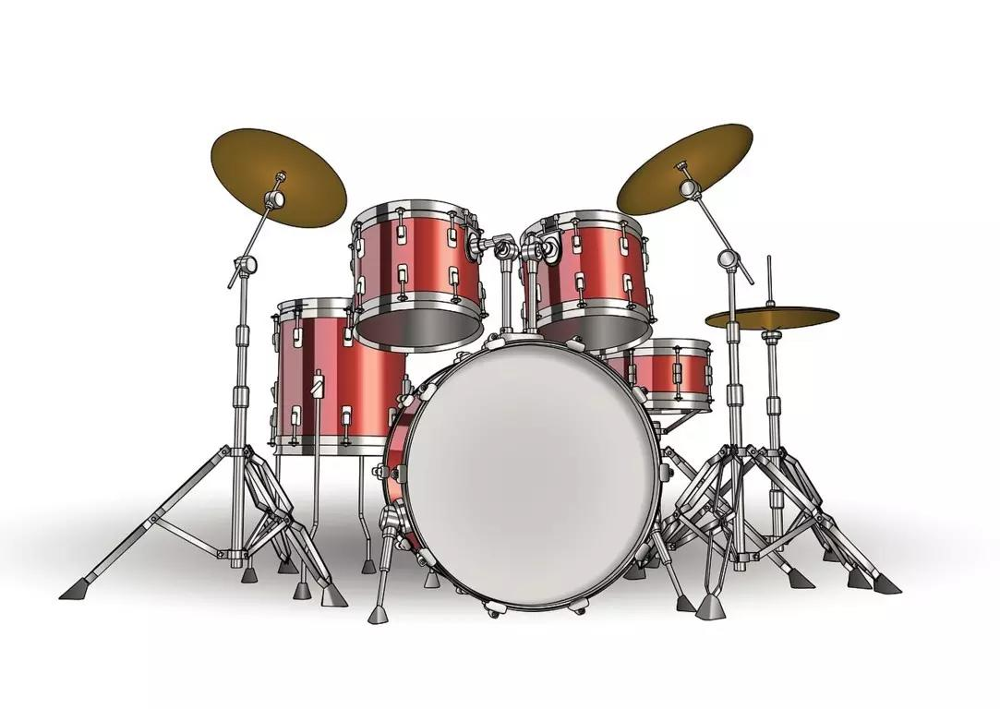

A música faz parte de nossas vidas, estamos sempre em contato com ela através dos vários estilos como o Pop, o samba, o rock dentre vários existentes. Há indícios de que desde a pré-história já se produzia música, provavelmente como conseqüência da observação dos sons da natureza. É de cerca do ano de 60.000 a.C.
Para entender o básico sobre música, é interessante saber alguns conceitos iniciais que nos ajudarão numa melhor compreensão sobre esse assunto.
01)O que é música?
Música é a manifestação artística e cultural por meio de sons.
02)O que é uma nota musical?
A nota musical, nada mais é do que o som emitido por algunsz instrumentos musicais que são as 7 notas musicais (dó, ré, mi, fá, sol, lá e si).
03)Quais são os tipos de frequências sonoras?
Na Música existem três tipos de frequências:
G r a v e s = frequência baixa ou sons graves.
A g u d o s = frequência alta ou sons agudos.
04)Como são representada as notas musicais?
As notas musicais são representadas em uma partitura, contendo cinco linhas e uma clave, normalmente a clave de sol, as notas de baixo para cima vão do grave ao agudo.
05)Quais são as propriedades da música?
As música se divide em três propriedades: MELODIA - São notas tocadas uma após a outra. HARMONIA - São duas ou mais notas tocadas ao mesmo tempo. RÍTIMO - É o andamento da música, ou seja, velocidade de execução medido em BPM.
Na música existem as sete notas musicais, representadas na pauta musical: DO,RÉ,MI,FÁ,SOL,LÁ e SI, seguidas pelas suas sub divisões que são os SUSTENIDOS (#) e os BEMOLS (b), sendo a primeira com função de aumentar o tom da nota e a segunda com a função de diminuir o tom da nota, essas sub-divisões são aquelas teclas pretas do piano.

Exemplos de instrumentos musicais:

flauta
piano
violino


saxofone
violão
bateria
Cada instrumento tem um som característico denominado
timbre que nos faz distinguir qual está sendo tocado, o timbre é essa característica bem interessante onde através do som que ele emite, é que sabemos o nome do instrumento.
Homenagem da semana:
Banda Charlie Brown Jr. Gênero: Rock nacional. foi uma banda de rock brasileira formada em 1992 na cidade de Santos, por Chorão (vocal), Champignon (baixo), Marcão Britto (guitarra), Thiago Castanho (guitarra) e Renato Pelado (bateria). A banda tem dez álbuns de estúdio lançados, três álbuns ao vivo e sete DVDs. Em julho de 2015, um levantamento do Deezer revelou que o Charlie Brown Jr. é a segunda banda de rock brasileira mais ouvida no exterior, atrás apenas do Sepultura. Em setembro de 2015, uma pesquisa similar da Billboard Brasil divulgou uma lista com 47 bandas e artistas brasileiros, na qual o Charlie Brown Jr. ficou na 31ª posição, o quarto grupo (depois do Sepultura, Natiruts e Tribalistas). Todos os membros da banda são naturais de Santos, exceto Chorão, natural de São Paulo.
A banda encerrou suas atividades em 2013, quando na madrugada do dia 6 de março daquele ano, Chorão foi encontrado morto em seu apartamento em São Paulo, devido a uma overdose de cocaína. Devido à morte de Chorão, os membros remanescentes decidiram mudar o nome da banda para A Banca, com Champignon assumindo os vocais, para preservar a memória de Chorão com o antigo nome e homenageá-lo. Porém, o novo grupo já encerrou as atividades em setembro do mesmo ano, após Champignon cometer suicídio em sua casa, também em São Paulo, na madrugada do dia 9 daquele mês.
Alguns sucessos da banda Charlie Brown Jr.
Ela vai voltarSó os loucos sabemQuando o sol se por


 
